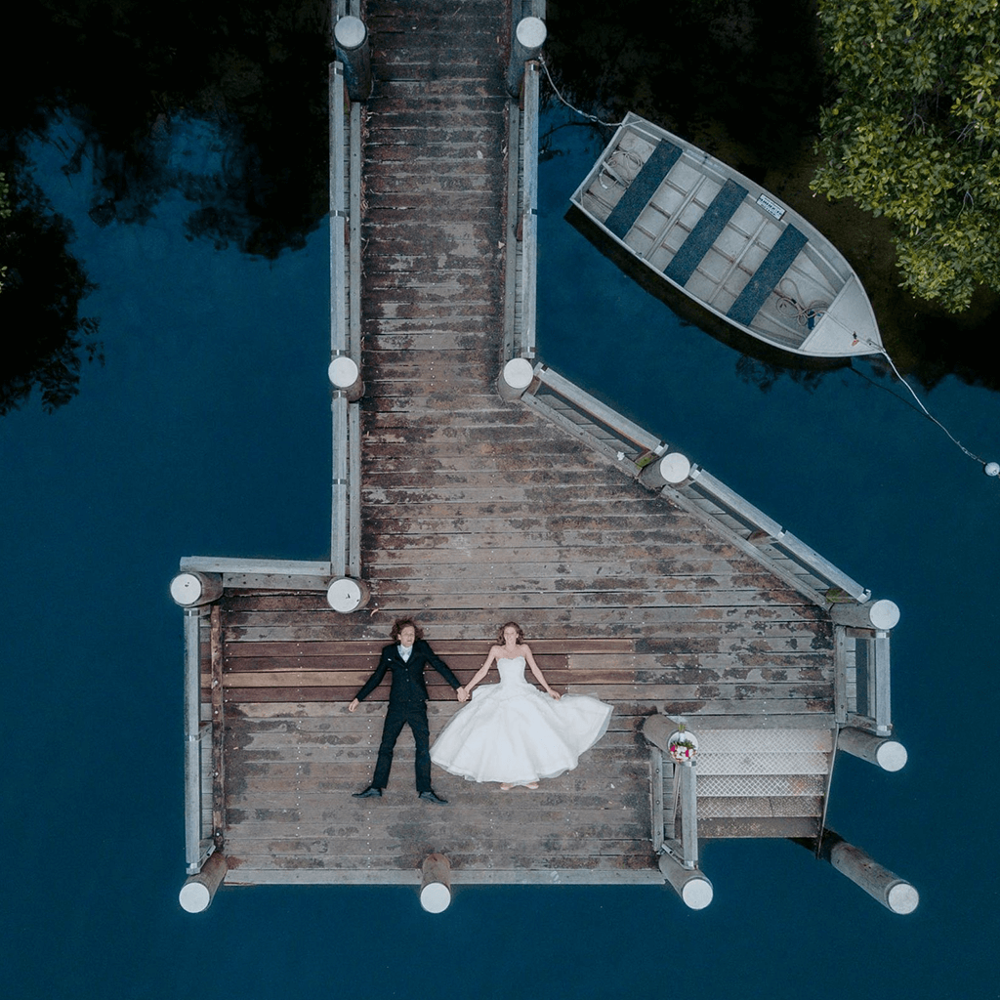

Real Estate

In the dynamic world of real estate, harnessing the power of technology is essential,
and our drone services are designed to elevate your property marketing strategy.
Drones provide a unique perspective, allowing us to capture breathtaking aerial views of properties,
showcasing their full potential and unique features By integrating drone technology into the real estate industry,
we bring a modern and engaging dimension to property presentations,
ensuring that your listings leave a lasting impression in today's competitive market.
industory

Drones have emerged as invaluable tools in the realm of industry and construction,
revolutionizing traditional practices and significantly enhancing efficiency.
These unmanned aerial vehicles are equipped with advanced imaging technologies,
such as high-resolution cameras and LiDAR sensors, allowing for comprehensive and accurate data collection.
In the construction sector, drones play a pivotal role in surveying large areas,
creating detailed topographical maps, and monitoring construction progress in real-time.
Their ability to access hard-to-reach or hazardous areas minimizes human risk and reduces the need for manual inspections.
Additionally, drones aid in the inspection of infrastructure, identifying potential issues before they escalate,
thereby ensuring timely maintenance and improving overall safety. With swift deployment and cost-effective operation,
drones have become indispensable assets, providing a transformative impact on project management,
data analysis, and decision-making processes in the dynamic landscape of industry and construction.
Weddings

Drones have added a captivating dimension to wedding photography and videography,
transforming traditional perspectives into cinematic masterpieces.
With their nimble maneuverability and high-resolution cameras,
drones can effortlessly capture breathtaking aerial shots of wedding venues,
outdoor ceremonies, and joyous celebrations. From sweeping panoramic views of the entire event
to intimate close-ups of the couple against scenic backdrops, drones provide a unique and immersive
visual experience. They allow photographers and videographers to create memorable
and dynamic shots that showcase the grandeur of the occasion. Drones also add an element of creativity,
allowing couples to cherish not only the intimate moments but also the stunning beauty of the surroundings.
The use of drones in weddings has become a trend, offering couples an innovative way to capture and relive the magic of their special day.